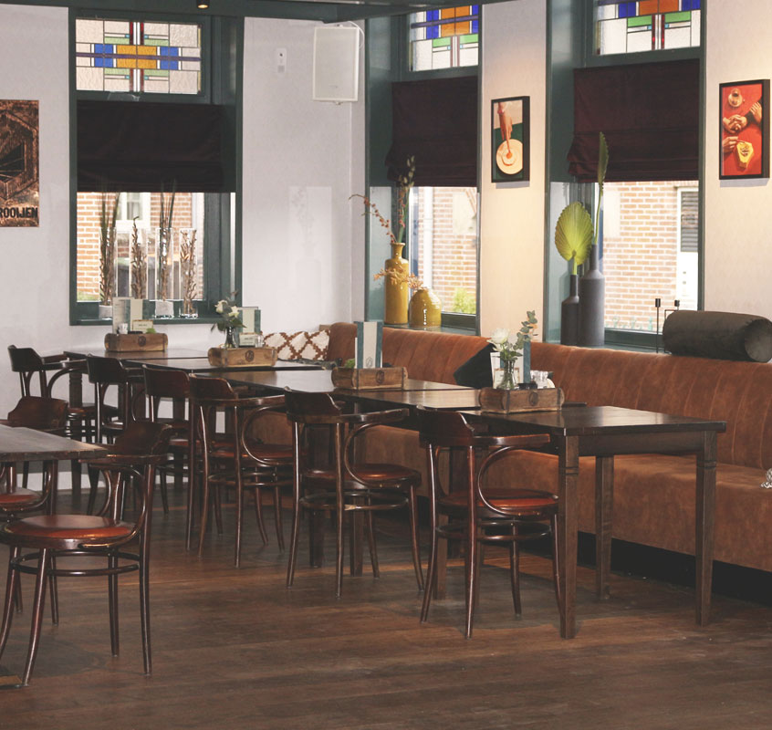
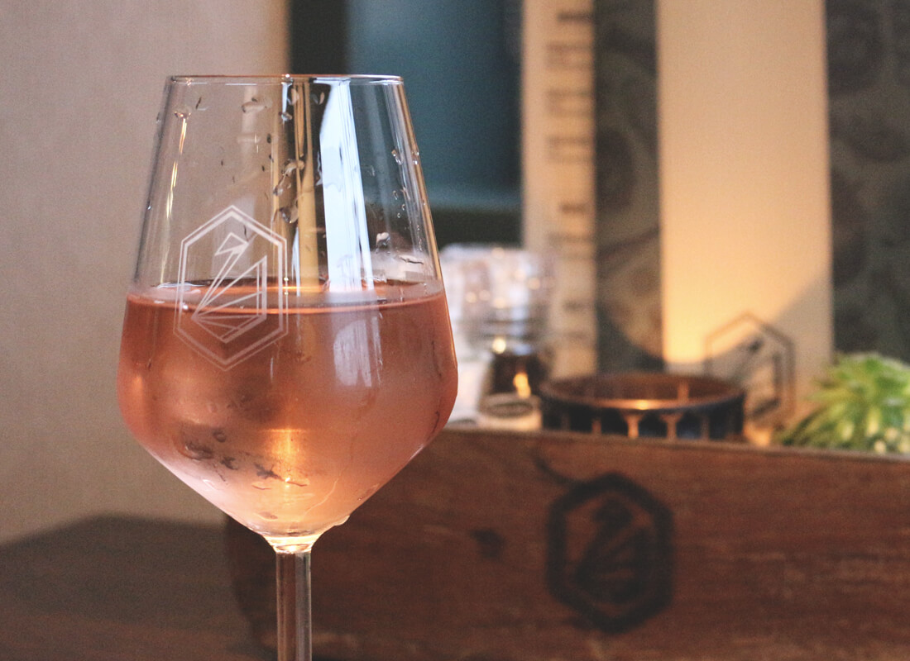
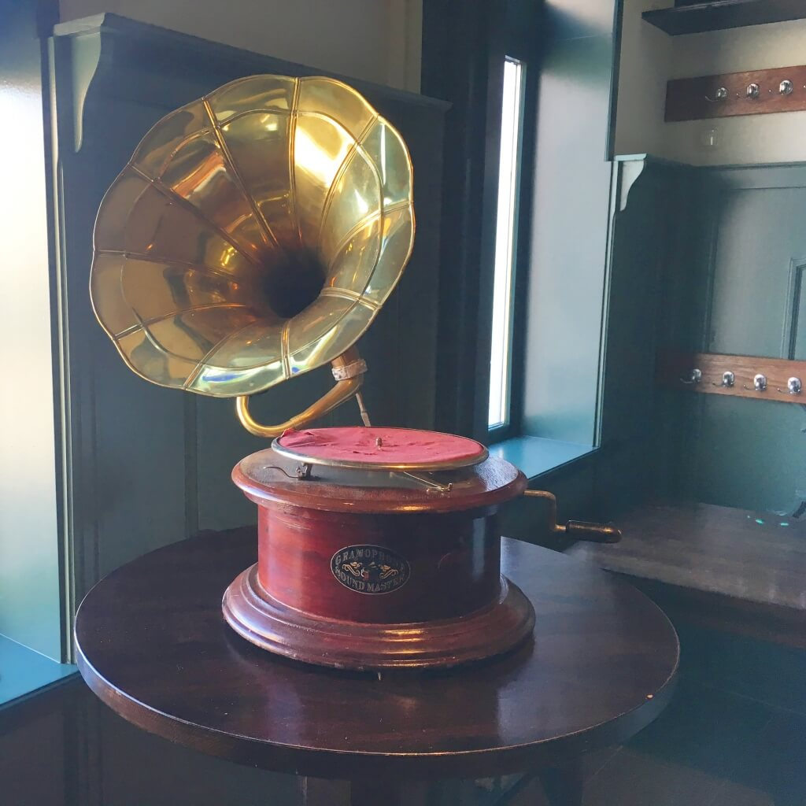

Het gezelligste eetcafé van WervershoofCafé/Bistro Van Rooijen
Huisgemaakte gerechten, een goed glas en een warm welkom. Een avondje lekker dineren, een feest of live muziek: u bent bij het juiste adres.

Welkom bij Van Rooijen
Het begrip van Wervershoof en omstreken.
Café/Bistro Van Rooijen is een bruisende ontmoetingsplek waar smaak, gezelligheid en vermaak samenkomen. Sinds 2019 zijn we een baken van gastvrijheid en culinaire verwennerij.
In onze bistro geniet u van huisgemaakte gerechten en een selectie van verfijnde drankjes. Daarnaast zijn we de ideale locatie voor feesten, partijen en evenementen, en bieden we een podium aan lokale en nationale artiesten: van intieme optredens tot livemuziek van bekende namen.


Wanneer is de bistro open?
Wilt u eens lekker bij ons komen eten met familie, vrienden of kennissen? Reserveer dan op tijd, het is vaak druk.
- Donderdagvanaf 17:00
- Vrijdagvanaf 17:00
- Zaterdagvanaf 17:00*
- Zondagvanaf 17:00
* Door de vele aanvragen voor feesten en partijen, en door evenementen, kan het zijn dat de bistro op zaterdag gesloten is.
Het uitgaanscentrum van Wervershoof
Het hele jaar door optredens, van opkomende artiesten tot shows van bekende namen, in onze grote zaal met podium.
Iets te vieren?
Een feestje geven doe je bij Van Rooijen. Van een intiem feest met vrienden tot een groot evenement: wij zorgen ervoor dat het een geslaagd feest wordt voor u en uw genodigden. Niets is ons te gek en alles is bespreekbaar.
- Verjaardag
- Jubileum
- Bedrijfsfeest
- Personeelsfeest
- Vrijgezellenfeest
- Bruiloft
- Afstudeerfeest
- Themafeest
Vertel ons uw wensen
Stuur een mail met uw wensen en mogelijkheden, of bel Peter Dekker. Wij nodigen u daarna uit voor een gesprek over het feest.
Werken bij Van Rooijen
Op dit moment zoeken wij een zelfstandig hulpkok. Heb jij iets met lekker eten? Sta je graag in de keuken of wil je het koksvak juist leren? Dan zoeken wij jou!
Wat zoeken wij?
- Je hebt passie voor eten en koken.
- Je kunt zelfstandig werken of wilt dit graag leren.
- Je volgt een koksopleiding of hebt gewoon veel interesse in het vak.
- Je bent beschikbaar van vrijdag tot en met zondag.
Wat bieden wij?
- Werken in een gezellig eetcafé met een leuk team.
- Een paar uurtjes per dag, ideaal naast je opleiding of andere bezigheden.
- De kans om ervaring op te doen en jezelf verder te ontwikkelen in de keuken.
- Een fijne werksfeer en lekker bezig zijn met eten.
Je hoeft echt niet alles al te kunnen: motivatie, enthousiasme en zin om te leren vinden we minstens zo belangrijk. Stuur ons een berichtje of kom gezellig even langs.
Reageer op de vacatureWees niet verlegen, we bijten niet
- Adres
- De Hoek 6
1693 AA Wervershoof - info@cafevanrooijen.nl
- Bistro
- Donderdag t/m zondag vanaf 17:00
- Volg ons